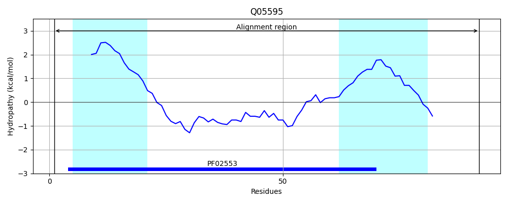
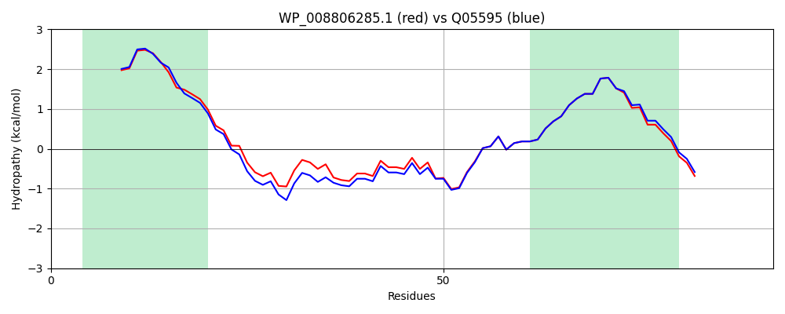

WP_008806285.1
Hit Accession: Q05595
Hit TCID: 3.A.1.23.6
Hit Description: gnl|BL_ORD_ID|12210 gnl|TC-DB|Q05595|3.A.1.23.6 Cobalt transport protein cbiN - Salmonella typhimurium.
Mach Len: 92
e:0.000000
Query TMS Count : 2
Hit TMS Count: 2
TMS-Overlap Score: 1.850000
Predicted Substrates:CHEBI:23337;cobalt(2+)
BLAST Alignment:
| Protein Hydropathy Plots: | |
|---|---|
 |  |
Pairwise Alignment-Hydropathy Plot: | |
|  | |